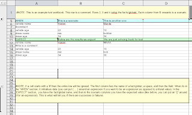
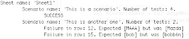

A new testing tool
This is a new experimental library looking for early adopters and feedback before we include it in the main part of the project. Previously there was the Fit For Rules library which worked well, but for whatever reason fit and documents haven’t proven super popular (also, it is GPL licenced).
So, based on some work from James Kerridge (Qantas) I have worked on a replacement that uses spreadsheets to set up test data:

You can run it and get pretty printed output like the following:

This is just a first cut, am looking for feedback and suggestions – the basic idea is that that is another way to capture test data (columns == scenarios).
The project is currently on github for the moment. You can read a bit more about it in the README and download it.
Most of the documentation is in the test/sample spreadsheet.
As a small curiosity, this is written entirely in scala (but when using the library people wouldn’t notice as its just a java api).
Would love to hear about peoples experiences with it (michael dot neale at gmail dot com).

{kind=link}
{kind=link}